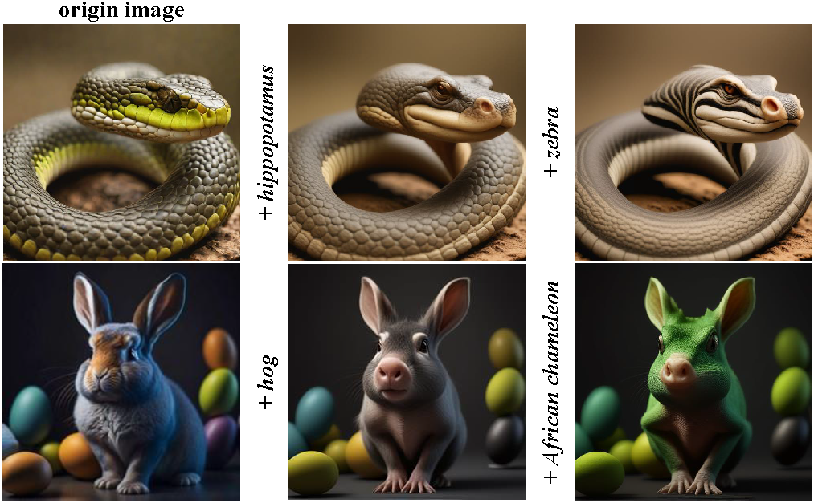
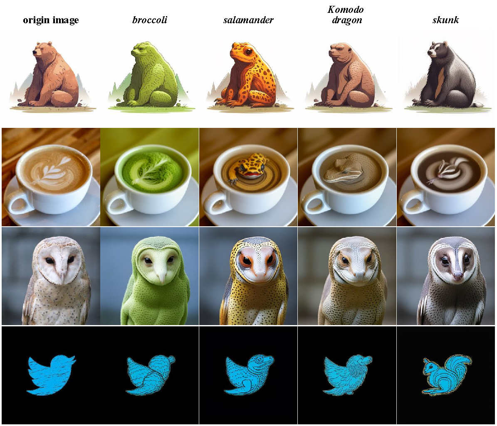

We propose a straightforward yet powerful approach for generating novel and meaningful combinations from a given object text-image pair in text-to-image synthesis. Our algorithm produces these combined object images using the central image and its surrounding text inputs, such as Bottle (image) and Porcupine (text) in the left picture. Specifically, the left central image depicts a real-world bottle, while the right central image, representing a dog, is generated using SDXL Turbo.
Abstract
In this paper, we study an object synthesis task that combines an object text with an object image to create a new object image. However, most diffusion models struggle with this task due to the imbalance between text and image inputs. To address this issue, we propose a simple yet effective method called Adaptive Text- Image Harmony (ATIH) for generating novel and surprising objects. First, we introduce a scale factor and an injection step to balance text and image features in cross-attention and to preserve image information in self-attention during the text8 image inversion diffusion process, respectively. Second, to adaptively adjust these parameters, we present a novel similarity score function that not only maximizes the similarities between the generated object image and the input text/image but also balances these similarities to harmonize text and image integration. Third, we optimize the noise to simultaneously enhance object editability and improve the reconstruction quality of the original object image. Extensive experiments demonstrate the effectiveness of our approach, showcasing remarkable object creations such as Bottle-Sea Lion and Dog-Lobster in Fig. 1. Project Page.
Our framework
Framework of the combinational object synthesis incorporating a scale factor α, an injection step i and noise ϵt in the diffusion process. The noise ϵt is regularized to simultaneously enhance object editability and maintain object fidelity. Using the optimal noise ϵt, we introduce an adaptive harmony mechanism to adjust α and i, balancing text and image similarities.

Comparing Results
Comparisons with different image editing methods. We observe that Infedit [61] Masactrl [6] and InstructPix2Pix [5] struggle to fuse object images and texts, while our method successfully implements new object synthesis, such as fawn-bowling ball in the second row.

Comparisons with different creative mixing methods. We observe that our results surpass those of MagicMix [29]. For ConceptLab [16], we exclusively examine its fusion results without making good or bad comparisons, as it is a distinct approach to creative generation.

Ablation Study
Ablation study of optimizing ϵt, injection step i and scale factor α from the third column to the fifth column.

More Results
Fused Results With three Prompts
In this subsection, we demonstrate our results with multiple prompts, highlighting the potential of our ATIH model for continuous editing.
Comparison with complex prompt
In this subsection, we compare our results with those of the DALLE·3 model assisted by Copilot. We used complex descriptive prompts for our editing results and provided the original images as input. The DALLE·3 model then edited the original images using these complex prompts. Firstly, we observe that the DALLE·3 model does not achieve results as acceptable as ours. Secondly, even with sufficient prompts, the DALLE·3 model fails to maintain the original structure and layout of the images

More visual Results
In this subsection, we present additional results of our model. we shows more generation results of our ATIH model. We used 4 images and edited them with 4 different text prompts.
